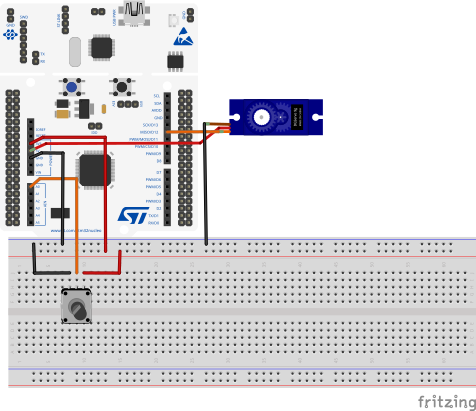
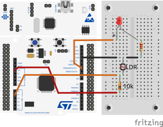

EE5203 Microprocessors
2025-06-29

HAL_ADC_Init(): Initialize ADC peripheral.HAL_ADC_ConfigChannel(): Configure ADC channel for potentiometer.HAL_ADC_Start(): Start ADC conversion.HAL_ADC_PollForConversion(): Wait for conversion completion.HAL_ADC_GetValue(): Read converted digital value.HAL_TIM_PWM_Init(): Initialize timer for PWM (50Hz for servo).HAL_TIM_PWM_Start(): Start PWM generation.__HAL_TIM_SET_COMPARE(): Set pulse width (0.5-2.5ms for servo position).ADC_Servo_Lab, select Nucleo-F401RETIM3 (Servo PWM - 50Hz): * Channel 1 → PWM Generation, PSC: 15, ARR: 19999, Pulse: 1500
ADC1 (Potentiometer): * PA0 → ADC1_IN0, Continuous mode, 12-bit, Right aligned, Rank 1, set End of Conversion Selection to EOC flag at the end of each regular conversion (needed so HAL_ADC_PollForConversion fires every sample).
USART2 (Serial Communication): * Connectivity -> USART2 -> Mode: Asynchronous, Baud Rate: 115200 Bits/s
Generate Code: Save .ioc and generate
/* USER CODE BEGIN 2 */
HAL_TIM_PWM_Start(&htim3, TIM_CHANNEL_1);
HAL_ADC_Start(&hadc1);
/* USER CODE END 2 */Why these libraries?
<stdio.h>: Required for sprintf() (String Print Formatted). It formats data (like integers) into a string buffer.<string.h>: Required for strlen() (String Length). It calculates the exact length of the string for UART transmission.How sprintf works: sprintf(buffer, "Val: %d", var); prints formatted text into a character array (buffer) instead of the screen.
/* USER CODE BEGIN WHILE */
while (1) {
HAL_ADC_PollForConversion(&hadc1, HAL_MAX_DELAY);
uint16_t pot_value = HAL_ADC_GetValue(&hadc1);
// Map ADC (0-4095) to servo pulse (500-2500 = 0°-180°)
uint32_t servo_pulse = 500 + ((pot_value * 2000) / 4095);
__HAL_TIM_SET_COMPARE(&htim3, TIM_CHANNEL_1, servo_pulse);
// Send Potentiometer Data to UART
char msg[50];
// Calculate Voltage in mV: (ADC_Value * 3300) / 4095
uint16_t voltage_mv = (pot_value * 3300) / 4095;
sprintf(msg, "Pot ADC: %hu, Voltage: %hu mV\r\n", pot_value, voltage_mv);
HAL_UART_Transmit(&huart2, (uint8_t*)msg, strlen(msg), 100);
HAL_Delay(20);
/* USER CODE END WHILE */
}LDR (Voltage Divider - Dark Sensor Config): * 10kΩ Resistor → 3.3V * LDR → GND * Junction (between Resistor and LDR) → PA1 (ADC1_IN1)
LED (PWM Output): * LED anode → PA7 (TIM3_CH2) via 220Ω * LED cathode → GND
HAL_ADC_Start_IT(): Start ADC with interruptHAL_ADC_ConvCpltCallback(): Auto-called when doneHAL_NVIC_EnableIRQ(): Enable interrupt__HAL_TIM_SET_COMPARE(): Set LED brightness
In CubeMX (reopen your .ioc file):
main.c for Interrupt-Driven ADCIn USER CODE BEGIN Includes: Add standard libraries for string manipulation.
In USER CODE BEGIN 2: Add
In USER CODE BEGIN 4: Add callback:
void HAL_ADC_ConvCpltCallback(ADC_HandleTypeDef* hadc) {
if (hadc->Instance == ADC1) {
uint16_t ldr_value = HAL_ADC_GetValue(&hadc1);
// Control LED Brightness
// We want Bright LED in Dark -> High ADC directly maps to High Brightness.
uint32_t led_brightness = (ldr_value * 999) / 4095;
__HAL_TIM_SET_COMPARE(&htim3, TIM_CHANNEL_2, led_brightness);
// Send LDR Data to UART
char msg[50];
sprintf(msg, "LDR Value: %hu\r\n", ldr_value);
HAL_UART_Transmit(&huart2, (uint8_t*)msg, strlen(msg), 100);
HAL_ADC_Start_IT(&hadc1); // Restart for continuous operation
}
}Main loop: Can stay empty - interrupts handle everything!
main.c for servo control.main.c for LDR LED control.